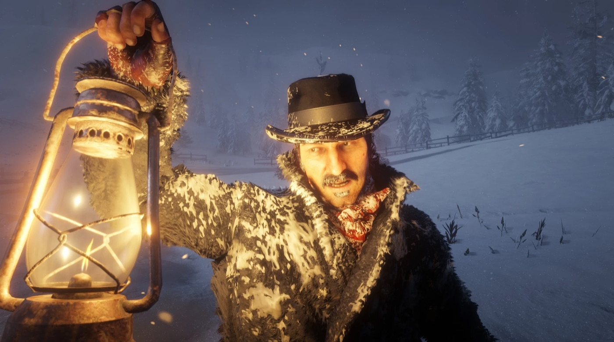
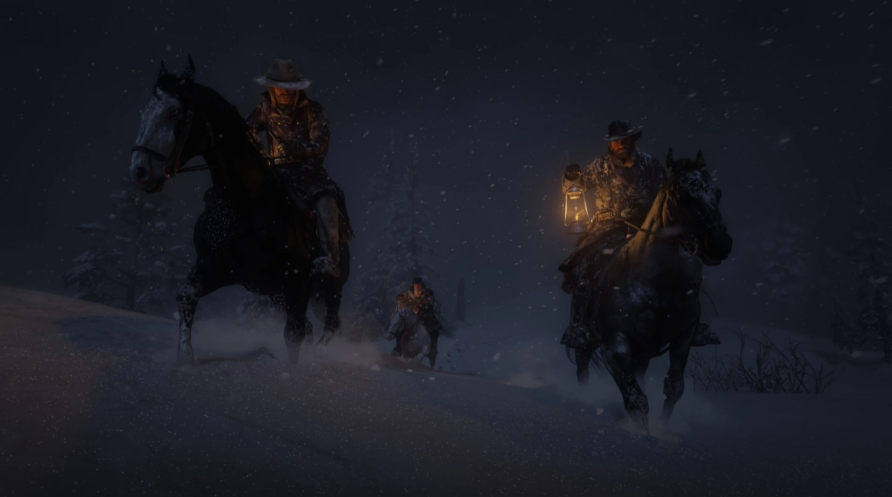

Chapter 1 of Red Dead Redemption 2 is the game's frozen prologue. It opens on the Van der Linde gang at its lowest point, half-dead in a blizzard, days after a robbery in Blackwater fell apart, and uses that desperation to introduce the gang, its leader, and the man we play as: Arthur Morgan. It is short, linear and grim by design, a deliberate bottleneck before the open world finally breathes.
Full spoilers for the opening of Red Dead Redemption 2 follow.
The aftermath of Blackwater
The game begins after its inciting disaster. In 1899 the gang attempted a ferry robbery in the town of Blackwater, in West Elizabeth, and it went catastrophically wrong. Money was lost, lawmen and Pinkertons swarmed the area, and several gang members were killed or scattered. Two badly wounded members, Davey Callander and Jenny Kirk, are dragged along in the retreat; others, including Sean MacGuire and Mac Callander, are missing. With the law hunting them in the lowlands, Dutch van der Linde leads the survivors up into the mountains to disappear, straight into a brutal late-spring snowstorm.
Colter: the gang at rock bottom
The gang shelters in Colter, an abandoned mining town high in the Grizzlies of Ambarino. Freezing and starving, they huddle in derelict cabins while the storm rages. Jenny has already died of her wounds; Davey dies soon after they arrive. Morale collapses, and tempers fray, the newcomer Micah Bell and Bill Williamson nearly come to blows. It falls to Dutch to hold the family together with promises of warmer country and one more score.
The chapter, mission by mission
1. Outlaws from the West
The opening mission throws you straight into the cold. Dutch, Arthur and Micah ride out from Colter to look for food and shelter and stumble onto a cabin occupied by members of the rival O'Driscoll Boys. A tense standoff with Dutch turns into a shootout, your first taste of the game's gunplay, before the trio return to camp. There, the wounded Davey finally dies, and Dutch delivers a defiant speech that sets the gang's tone for the whole game: stay strong, stay loyal, and they will get through this together.

2. Enter, Pursued by a Memory
John Marston went out scouting days ago and has not returned, and Abigail is frantic. Javier Escuella and Arthur set out to find him. They come across John's horse, frozen to death in the snow, then hear John calling for help. He has been mauled by wolves and left badly wounded, the attack that scars his face for the rest of the saga. Arthur fights off the wolves and the two carry John back to camp.
3. Old Friends
Seeking intelligence on a train the O'Driscolls plan to rob, Dutch leads a party to assault their camp at Ewing Basin. Arthur and Dutch scope the camp from a ridge while Micah, Bill, Javier and Lenny Summers take positions, and the gang wipes out the O'Driscolls in a pitched gunfight. Searching the bodies, Micah turns up plans for the train job and Arthur finds a cache of explosives, the keys to the chapter's big score. The mission ends with Arthur lassoing a fleeing young O'Driscoll named Kieran Duffy, who is hauled back to Colter for questioning.

4. The Aftermath of Genesis
Investigating a nearby homestead, the gang finds the Adler ranch overrun by O'Driscolls, the body of its owner, Jake Adler, frozen outside. After the shootout, his widow Sadie Adler emerges from the cellar to find Micah looting her home; Dutch defuses the confrontation and takes her back to camp. With another mouth to feed, the mission proper sends Arthur out with Charles Smith to hunt deer, a quiet introduction to the game's hunting systems and to one of the gang's steadiest hands.
5. Who the Hell Is Leviticus Cornwall?
Armed with the O'Driscolls' plans and explosives, the gang hits the train, blowing the track in a mountain pass and storming the carriages. The haul is rich, but it comes with a price: the private train belongs to the industrialist Leviticus Cornwall, one of the most powerful men in the region. In robbing it, the gang makes an enemy whose reach and grudge will hound them across the rest of the story.
6. Eastward Bound
With money in hand and the weather finally breaking, the gang packs up and rides down out of the mountains. Chapter 1 ends as they descend toward greener country and a new camp at Horseshoe Overlook, where the world of Red Dead Redemption 2 truly opens up.
Key characters introduced
Colter is the gang's roll call. It establishes Arthur Morgan as protagonist and Dutch's right hand, reintroduces John Marston (and the wolf attack behind his scars), and seeds the distrust around Micah Bell. It brings in Sadie Adler, soon to become one of the gang's fiercest members, the captured O'Driscoll Kieran Duffy, and steady, principled Charles Smith. Overseeing it all is Dutch van der Linde, already promising a freedom he will never quite deliver.
Why Colter matters
The chapter is brief, but it does enormous work. By stripping the gang down to snow, hunger and grief, it makes everything they rebuild afterward feel earned, and everything they lose later cut deeper. It plants the three threads that drive the early game, the O'Driscoll feud, the Cornwall vendetta, and the fragile loyalty Dutch demands, and it teaches you the language of the game in miniature: shooting, hunting, looting, riding. When the gang rides east, you are not just changing camps; you are leaving the prologue and stepping into one of the most detailed open worlds ever built.